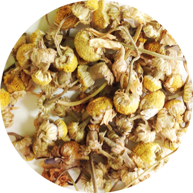
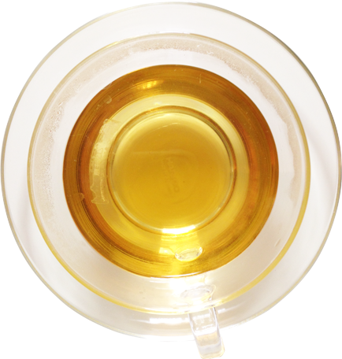

母の薬草
世界で最も親しまれているハーブ
気持ちを落ち着かせてくれます。
ストレスのある人や不眠の方におすすめです。
胃の調子を整え、からだを温めてくれるので
身心ともにオールマイティのハーブです。
 | 和名 | カミツレ |
| 学名 | Matricaria recutita |
| 科名 | キク科 |
| ティに使う部分 | 花 |
|---|---|
| 作用 | 鎮痛、鎮静、鎮痙、消炎、弛緩、発汗、利尿 |
| 主要成分 | 精油、フラボノイド、クマリン、脂肪酸、シアン化水素グリコシド、サリチル酸塩誘導体、コリン、タンニン |
| 注意点 | キク科アレルギーの人は注意 |
| 利用法 | うがい薬として、湿布として傷や目の疲れに |
| 香り | 甘い花の香り |
|---|---|
| 味 | 甘み
 清涼感
酸味
清涼感
酸味
苦味
渋み

|
| ブレンドおすすめ | 身体が温まり、ほっと一息のティ ジャーマンカモミール＋牛乳＋ハチミツ |